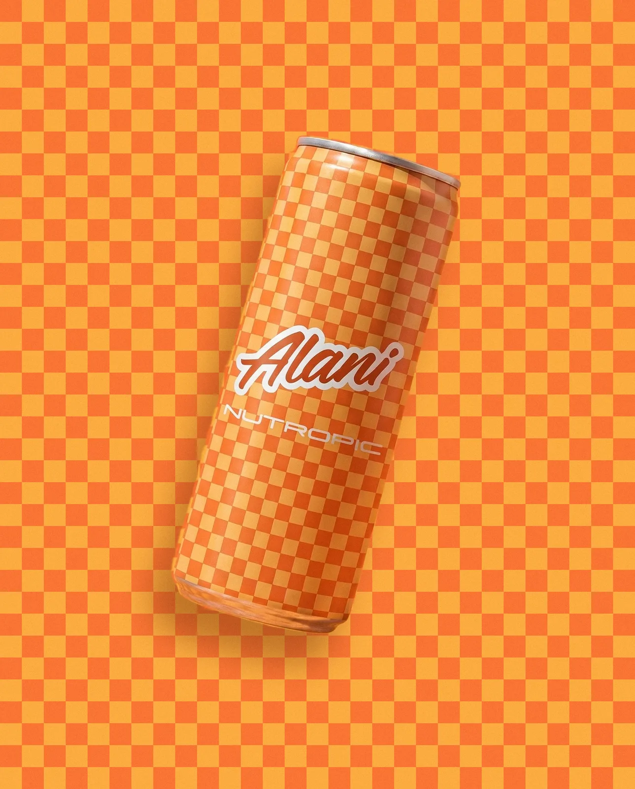
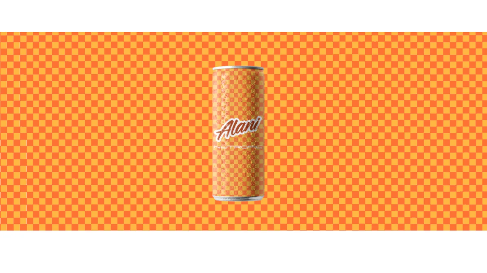
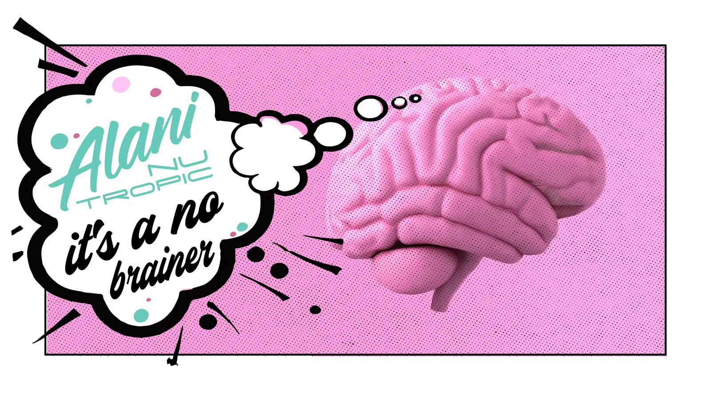
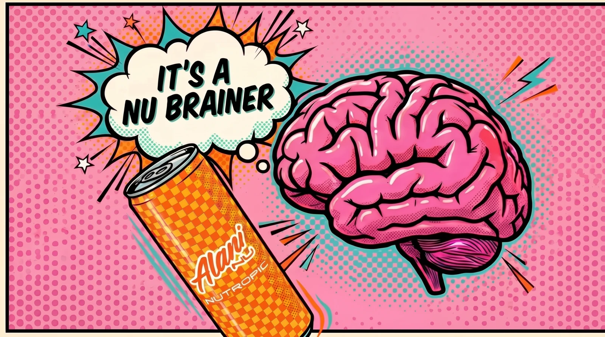
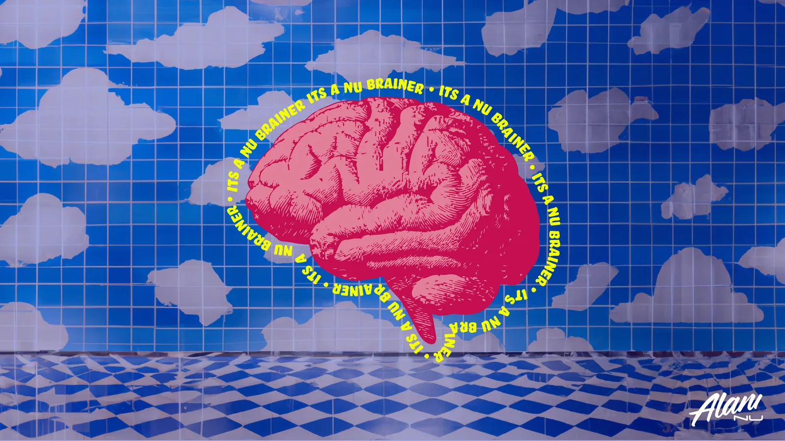
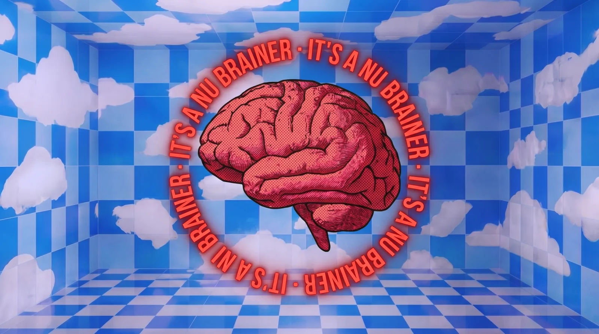
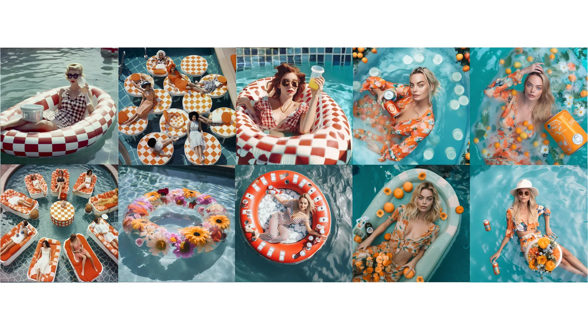
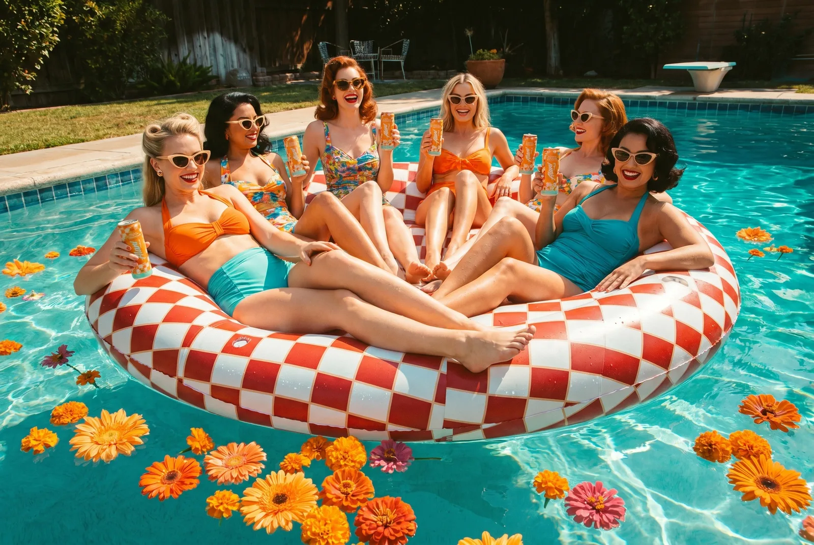

A nootropic line for Alani Nu — because for a brand built on energy, entering the calm-energy aisle is, well, a no brainer.

This started as strategy, not pictures: the data said younger drinkers were trading alcohol for functional beverages, and Alani Nu had no offer in the space. I built the case, named the line, and art-directed a brand world with the AI tools of early 2023 — pink brains, checkered cans, a cloud-tiled dream room. In 2026 I re-executed the same shots with modern models. Both generations are on this page; the strategy didn't need updating.

The 2026 backdrop isn't generated at all. Models still fumble large flat patterns, so the can is AI, cut out, and recomposited over a checkerboard drawn in code — colors and square size sampled from the render, grain matched. AI for the subject; code for the geometry.


The burst bubble is generated empty on purpose — "it's a no brainer" gets set in type and composited, because lettering belongs to the designer, not the model.




In 2023 this could only exist as a moodboard of found photos. In 2026 the board became an original campaign image — correct faces, correct hands, the brand's own cans in frame.
The pitch led with Berenberg data, not pictures — the imagery existed to make a market argument feel inevitable. That's the job: research → positioning → a world you can see. The 2023/2026 pairs add the third proof: the direction was strong enough to survive three model generations untouched, and the craft judgment — what to generate, what to draw, where type belongs — is the part no model supplies.